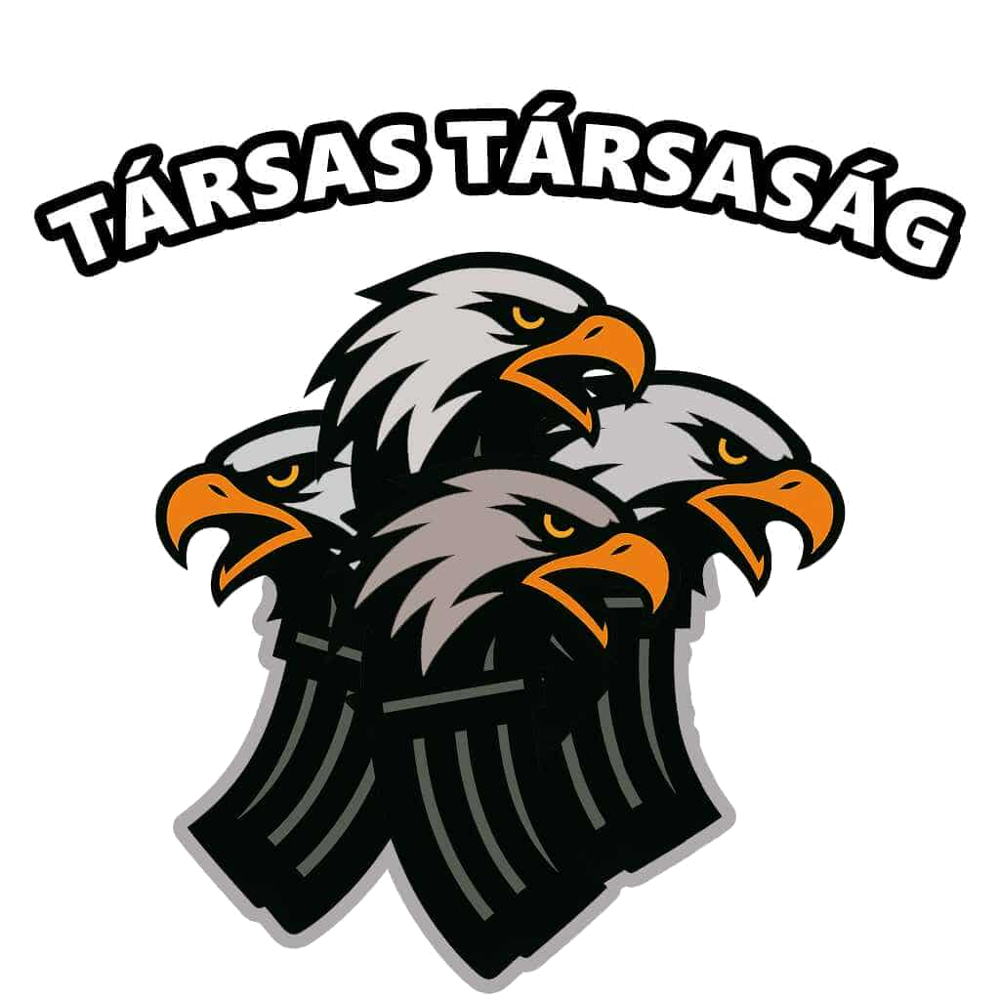

Társas Társaság Asztaltársaság
Üdvözöljük a Társas Társaság Asztaltársaság oldalán. A társaságunk Selmecz diákhagyományait ápolja, és az ott játszott társasokra specializálódott. A társaságunkat 2025-ben alapítottuk, és azóta is töretlenül működik.
Víziónk
Feléleszteni a manapság már szűkkörben játszott társasokat, és megismertetni azokat a fiatalabb generációkkal.
Tagjaink
Cerevis
A Cerevis egy sajátos burschjáték, melyet a főiskola hallgatói régóta játszanak, és – ahogy a neve is utal rá – egy sörösjáték. 32 lapos magyar kártyával játsszák. A játék célja, hogy a játékosok felülütésekkel minél több ütést szerezzenek meg az ellenfél párosa elől. A Cerevis során a bukott partikat nem kifizetni kell, hanem egy meghatározott sörmennyiség formájában le kell inni. A játékot négyen játsszák: két-két egymással szemben ülő játékos alkot egy párost.
Kérdés...
Eredmények
Fajer
A Fajer (Feuer, Schwimmen) egy bursch felmenőink által is játszott hagyományos kártyajáték, melyet 32 lapos magyar kártyával játszanak legfeljebb 6 fővel. A játék célja, hogy a cserélgetések során minél magasabb pontértékű 3 lapos kombinációt gyűjtsünk össze a kézben, elkerülve azt, hogy a kör végén a miénk legyen a legkisebb érték.
Pisont
A Pisont egy hagyományos, selmeci diákhagyományokhoz kötődő kockajáték, amelyet bursch felmenőink is előszeretettel játszottak. A játékot két darab hatlapú dobókockával játsszák, minimális eszközigényű, ám halmozódó szorzói és szabályai révén komoly odafigyelést igényel – aki hibázik, annak innia kell!
Alapok
- Játékosok száma: 3–10 fő
- Szükséges eszköz: 2 db hatlapú dobókocka
- A dobás értéke: A két kockán lévő számok összege (nem helyi értéke)
A játék kezdése
A „nulladik körben” minden játékos dob egyet a kockákkal. A legkisebb összeget dobó játékos kezdi a tényleges első kört. A nulladik körben dobott értékeknek nincs egyéb következménye.
A „Pisont” tisztség
Aki a játék kezdetétől (a nulladik kör nem számít) először dob 2+1-es kombinációt (azaz összesen 3-at), az lesz a Pisont.
- A Pisont fejére hagyományosan papírcsákót tesznek.
- Innentől kezdve minden olyan dobásnál, amelyben a 3-as szám szerepel (akár mint összeg, akár mint az egyik kocka értéke), a Pisontnak a szorzójának megfelelő kortyot kell innia.
- Ha a Pisont újra 2+1-et dob, kétszeres Pisonttá válik – a 3-as előfordulásakor már a megnövekedett szorzója lép életbe.
- A Pisont az asztalt időlegesen csak EKS-sel (kupájának fenékig ürítésével) hagyhatja el.
Nevezetes dobások
| Dobás | Szabály / Esemény |
|---|---|
| 0 + 0 / 0 + 1 | Kocka leesik az asztalról (végzetes hiba): minden játékos fenékig üríti a kupáját (EKS!). |
| 1 + 1 | A „Legszánalmasabb Dobás”: a dobó játékos iszik 1 kortyot. |
| 2 + 1 | A „Pisont” tisztség megszerzése / halmozása. Az új Pisont tiszteletére minden játékos iszik 1 kortyot. |
| 2 + 2 | Megegyező értékek (felezés): a dobó az egyik kocka értékét (2 korty) megissza, a másik kocka értékét (2 korty) kiosztja egy választott játékosnak. |
| 3 + 1 | Ha van Pisont, a szorzójának megfelelő számú kortyot iszik. |
| 3 + 2 | A dobót megelőző játékos iszik 1 kortyot. Ha van Pisont, a szorzója szerint ő is iszik. |
| 3 + 3 | Mindenki gyorsan megfogja az orrát, a dobó dönt a leglassabbról (1 korty). Megegyező értékek (felezés): az egyik kocka értékét (3 korty) megissza, a másikat (3 korty) kiosztja. A Pisont a szorzója kétszeresét issza. |
| 3 + 4 | A dobót követő játékos iszik 1 kortyot. Ha van Pisont, a szorzója szerint ő is iszik. |
| 4 + 1 | A dobót megelőző játékos iszik 1 kortyot. |
| 4 + 2 | Minden játékos gyorsan megfogja az orrát, a dobó dönt ki volt a leglassabb, és rá oszt 1 kortyot. |
| 4 + 4 | Megegyező értékek (felezés): az egyik kocka értékét (4 korty) megissza, a másikat (4 korty) kiosztja. |
| 5 + 1 | Ugyanaz, mint a 4 + 2 (orr megfogása, a leglassabb iszik). |
| 5 + 2 | Ugyanaz, mint a 3 + 4 (a dobót követő játékos iszik 1 kortyot). |
| 5 + 3 | Minden férfi (srác) iszik 1 kortyot. A Pisont a szorzója szerint iszik. |
| 5 + 5 | Minden játékos iszik 1 kortyot a legkerekebb dobás tiszteletére. Megegyező értékek (felezés): az egyik kocka értékét (5 korty) megissza, a másikat (5 korty) kiosztja. |
| 6 + 6 | Megegyező értékek (felezés): az egyik kocka értékét (6 korty) megissza, a másikat (6 korty) kiosztja. |
Büntetések és különleges szabályok
- Türelmetlen dobó: Ha valaki azelőtt dob, mielőtt a többiek befejezték volna az ivást, büntetésből meg kell innia az éppen ivók adagját is.
- Csaló / jósló dobó: Ha valaki rázás közben helyesen megtippeli a dobás összegét, a kupáját fenékig kell ürítenie (EKS!).
- Hardcore Pisont: Egyes baráti körökben az összes 6-os szám dupla 3-asnak számít, így a Pisont által elfogyasztott italmennyiség megsokszorozódik.
- Többes Pisont: Az újonnan 2+1-et dobó játékos nem veszi át az előző tisztségét, hanem 2. Pisonttá válik. Már aktív Pisont újbóli 2+1-es dobásával ki-be kapcsolja saját tisztségét.
- Távolmaradás: Ha valaki elhagyja az asztalt, egy szomszédja számolja a rá eső kortyokat. Visszatéréskor a megbízott és a visszatérő együtt issza meg a felgyűlt adagot, ha nem emlékeznek a pontos számra.
- Négy név szabálya: Akinek 4 neve van, arra bármikor ráruházható a Pisont tisztség.
Megjegyzés
A Pisont szabályrendszere társaságonként változhat – sok baráti kör saját „háziszabályokat” is alkalmaz. A játék kezdete előtt érdemes tisztázni az adott közösségben érvényes pontokat és büntetéseket. A fenti szabályzat a Selmecen és a Társas Társaság Asztaltársaság által játszott hagyományos változatot mutatja be.
Eseményeink
Jövőbeli események
| Esemény Neve | Dátum | Időpont | Helyszín | Részletek |
|---|
Múltbeli események
| Esemény Neve | Dátum | Időpont | Helyszín | Részletek |
|---|